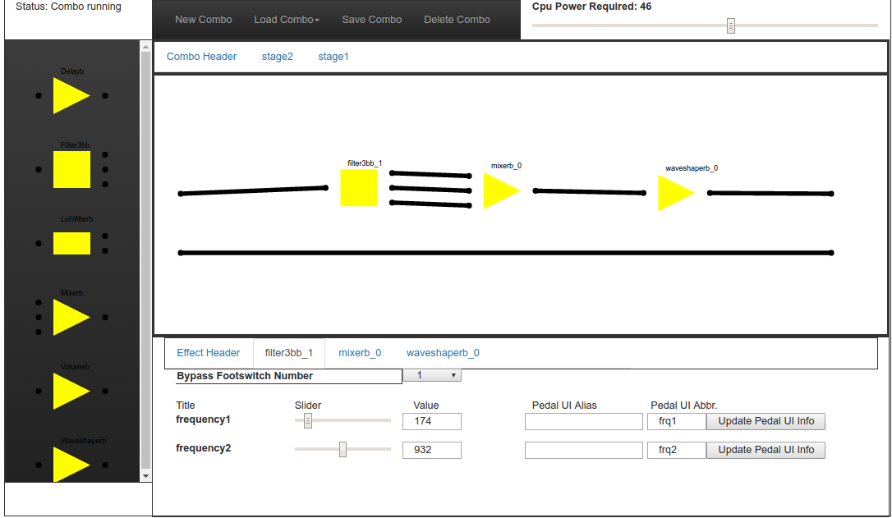
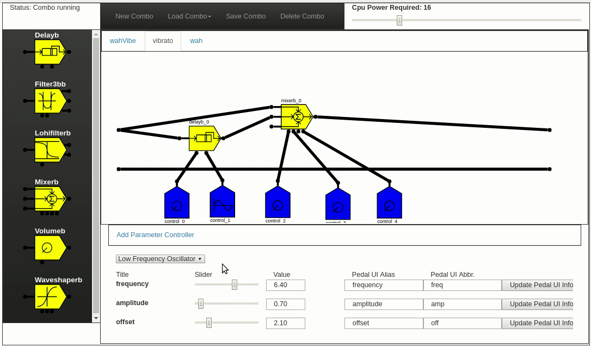
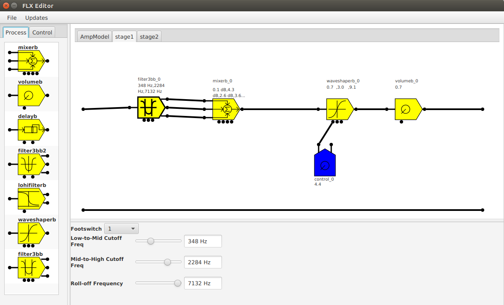

The FLX Editor Application
The FlxEditor is a desktop application that allows the user to create effects using audio signal processing blocks and process parameter controls (Envelope generator, Low Frequency Oscillator) and upload them to the FLX pedal via USB.
Version 1

The OfxEditor served the client browser with the editor application. This was a quasi-MVC application, where the model is the OfxMain process. The graphics were done using SVG (Scalable Vector Graphics) and D3, a javascript library for using SVG that could be described as jQuery for SVG. This was a primative version of the editor, as the process symbols were rough and no process parameter controllers were present (more about those in the next Version).
Version 2

The OfxEditor for this version was a more refined version of the previous editor. It contained the finished process symbols as well as symbols for the process parameter controls. Click here for the OfxEditor V2 code.
Version 3

This is the most recent version of FlxEditor, which was re-written in Java using JavaFX. Click here for the FlxEditor code.